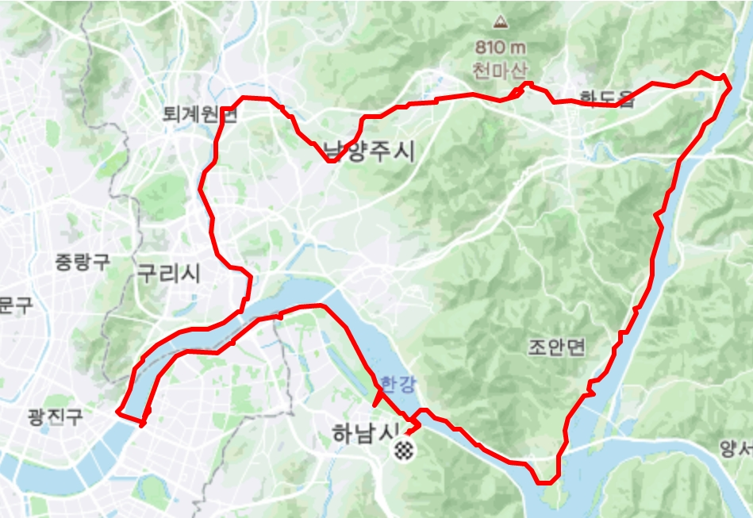
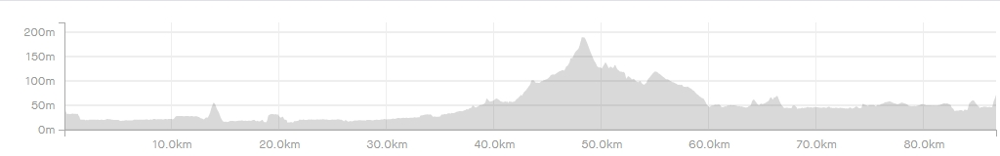

| 코스명 | 가오리 코스 |
| 코 스 | 한강자전거길-왕숙천자전거길-경춘선자전거길-북한강자전거길-남한강자전거길-한강자전거길 |
| 거 리 | 87km |
| 시 간 | 4시간 2분 |


오늘은 Happy Friday 오직 나를 위한 라이딩을 시작했습니다.
아침부터 나홀로 라이딩을 위해 검단산 주차장에 차를 세우고 라이딩을 시작했습니다. 오늘의 코스는 가오리코스
하남에서 시작하여 시계방향으로 도는 코스를 택한 후 늦여름과 초가을의 날씨를 동시에 즐기면서 사색의 라이딩을 하였습니다.
가슴이 탁 트이는 한강변 바람을 맞으면서 산과 들을 가로질러 옛 철길에 놓여진 시원한 냉동터널을 지나 초계국수까지 모든 스트레스를 한방에 날려주는 즐거운 라이딩 있었습니다.